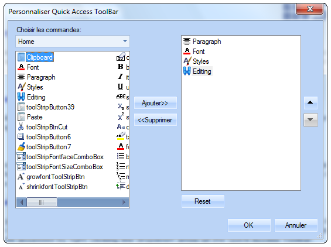

Localization is the process of customizing the application to culture-specific resources such as language translation and information formatting for date, time and currency.
Syncfusion components support localizing and have our own neutral resources. These resources can be localized as per the customer requirement.
Localization is made easy with the latest version of Essential Studio (Volume - 2 2011). Earlier versions of the products have a different localization procedure (for the documentation refer v8.4.0.10). Syncfusion components will continue to support both the procedures.
Use Case Scenarios
Localization helps in transforming the application to be culture-specific. This enables you to customize the application according to the requirements of global customers.
Adding Localization to an Application
Follow the below procedure to localize Quick Access ToolBar Customization dialog of RibbonControlAdv:
1. Include the required namespaces at the beginning of the source file.
|
[C#] using Syncfusion.Windows.Forms; using Syncfusion.Windows.Forms.Tools; |
|
[VB] Imports Syncfusion.Windows.Forms Imports Syncfusion.Windows.Forms.Tools |
2. Create a class that implements ILocalizationProvider interface defined in the Syncfusion.Windows.Forms namespace in the Syncfusion.Shared.Base.dll.
|
[C#] class Localizer : ILocalizationProvider { #region ILocalizationProvider Members
public string GetLocalizedString(CultureInfo culture, string name) { return string.Empty; }
#endregion } |
|
[VB] Friend Class Localizer Implements ILocalizationProvider #Region "ILocalizationProvider Members"
Public Function GetLocalizedString(ByVal culture As CultureInfo, ByVal name As String) As String Return String.Empty End Function
#End Region End Class |
3. Return the localized versions of the strings corresponding to the string identifiers.
|
[C#] switch (name) { case ToolsResourceIdentifiers.QuickAccessCustomizeCaption: return "Personnaliser Quick Access ToolBar"; default: return string.Empty; } |
|
[VB] Select Case name Case ToolsResourceIdentifiers.QuickAccessCustomizeCaption Return "Personnaliser Quick Access ToolBar" Case Else Return String.Empty End Select |
4. String identfiers are defined in the ResourceIdentifiers and the ToolsResourceIdentifiers classes in Syncfusion.Shared.Base and Syncfusion.Tools.Windows assemblies respectively.
|
[C#/VB] Syncfusion.Windows.Forms.Tools.ToolsResourceIdentifiers Syncfusion.Windows.Forms.ResourceIdentifiers |
5. Leave empty string for the rest of the identifiers that arenot involed in the localization. These identifiers will be loaded with default value.
6. Assign this instance to the Provider property of the LocalizationProvider class, before the InitializeComponent call in the constructor of the Application.
|
[C#] LocalizationProvider.Provider = new Localizer(); |
|
[VB] LocalizationProvider.Provider = New Localizer() |
7. You will get the following code snippet as the result.
|
[C#] class Localizer : ILocalizationProvider { #region ILocalizationProvider Members public string GetLocalizedString(CultureInfo culture, string name) { switch (name) { case ToolsResourceIdentifiers.QuickAccessCustomizeCaption: return "Personnaliser Quick Access ToolBar"; case ToolsResourceIdentifiers.QuickAccessDialogCommands: return "Choisir les commandes:"; case ToolsResourceIdentifiers.QuickAccessDialogButtonAdd: return "Ajouter>>"; case ToolsResourceIdentifiers.QuickAccessDialogButtonRemove: return "<<Supprimer"; case ToolsResourceIdentifiers.QuickAccessDialogButtonReset: return "Reset"; case ToolsResourceIdentifiers.QuickAccessDialogButtonOk: return "OK"; case ToolsResourceIdentifiers.QuickAccessDialogButtonCancel: return "Annuler"; default: return string.Empty; } } #endregion } // Place this line before the InitalizeComponent call in constructor. LocalizationProvider.Provider = new Localizer();
|
|
[VB] Friend Class Localizer Implements ILocalizationProvider #Region "ILocalizationProvider Members" Public Function GetLocalizedString(ByVal culture As CultureInfo, ByVal name As String) As String Select Case name Case ToolsResourceIdentifiers.QuickAccessCustomizeCaption Return "Personnaliser Quick Access ToolBar" Case ToolsResourceIdentifiers.QuickAccessDialogCommands Return "Choisir les commandes:" Case ToolsResourceIdentifiers.QuickAccessDialogButtonAdd Return "Ajouter>>" Case ToolsResourceIdentifiers.QuickAccessDialogButtonRemove Return "<<Supprimer" Case ToolsResourceIdentifiers.QuickAccessDialogButtonReset Return "Reset" Case ToolsResourceIdentifiers.QuickAccessDialogButtonOk Return "OK" Case ToolsResourceIdentifiers.QuickAccessDialogButtonCancel Return "Annuler" Case Else Return String.Empty End Select End Function #End Region End Class ' Place this line before the InitalizeComponent call in constructor. LocalizationProvider.Provider = New Localizer()
|

Figure 1493: Localized Quick Access ToolBar Customization Dialog*
.
Note: This localization procedure is applicable only for the UI’s specific to the Syncfusion.Tools.Windows and Syncfusion.Shared.Base assemblies.
*The German translation in the illustration was done with the help of Google translate.
Sample Link
To view samples:
1. Open the Windows Sample Browser
2. Navigate to Tools Samples > Localization Samples > New Localization Procedure